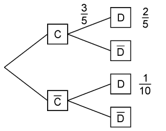

Bayerisches Abitur in Mathematik 2014¶
Aufgabe
Das Baumdiagramm gehört zu einem Zufallsexperiment mit den Ereignissen C und D.
Berechnen Sie \(P(\bar{D})\).
Weisen Sie nach, dass die Ereignisse \(C\) und \(D\) abhängig sind.
Von den im Baumdiagramm angegebenen Zahlenwerten soll nur der Wert \(\frac{1}{10}\) so geändert werden, dass die Ereignisse \(C\) und \(D\) unabhängig sind. Bestimmen Sie den geänderten Wert.
Lösung zu Teil a
Die Wahrscheinlichkeit \(P(D)\) ergibt sich aus den Angaben im Baumdiagramm zu
Mit der Bedingung \(P(D)+P(\bar{D})=1\) folgt \(P(\bar{D})=\frac{1}{2}\).
Lösung zu Teil b
Die Ereignisse \(C\) und \(D\) sind dann abhängig voneinander, wenn der Ausgang des Ereignisses \(C\) die Wahrscheinlichkeit für das Ereignis \(D\) beeinflusst. Es muss also gelten \(P(D|C)\neq P(D|\bar{C})\). Aus dem Baumdiagramm lesen wir \(P(D|C)=\frac{3}{5}\) ab.
Des Weiteren benötigen wir
womit wir \(P(\bar C) = 1-P(C)=\frac{1}{3}\) und damit schließlich
erhalten. Somit folgt wie behauptet \(P(D|C)\neq P(D|\bar{C})\), so dass die Ereignisse \(C\) und \(D\) abhängig sind.
Lösung zu Teil c
Im Gegensatz zur Teilaufgabe b muss nun \(P(D|C)=P(D|\bar{C})\) gelten. Dabei muss weiterhin \(P(\bar{C})=\frac{1}{3}\) sein. Wir erhalten somit
Wir benutzen nun Sage, um aus den gegebenen Wahrscheinlichkeiten mit Hilfe der Bedingungen
sämtliche Wahrscheinlichkeiten im Baumdiagramm zu berechnen. In der Liste
wahrscheinlichkeiten können die Werte für \(P(D|C)\), \(P(C\cap D)\)
und \(P(\bar{C}\cap D)\) gesetzt werden.